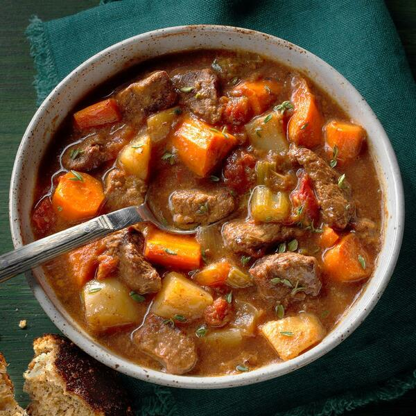

Slow Cooker Beef Stew

This easy slow cooker beef stew recipe made with potatoes, carrots, celery, broth, herbs, and spices is hearty and comforting. You won't be slow to say 'yum'!
Ingredients
- 2 pounds beef stew meat, cut into 1-inch pieces
- ¼ cup all-purpose flour
- ½ teaspoon salt
- ½ teaspoon ground black pepper
- 1 ½ cups beef broth
- 4 medium carrots, sliced
- 3 medium potatoes, diced
- 1 medium onion, chopped
- 1 stalk celery, chopped
- 1 teaspoon Worcestershire sauce
- 1 teaspoon ground paprika
- 1 clove garlic, minced
- 1 large bay leaf